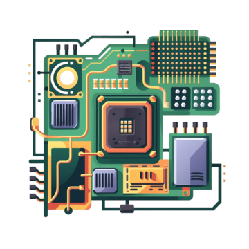
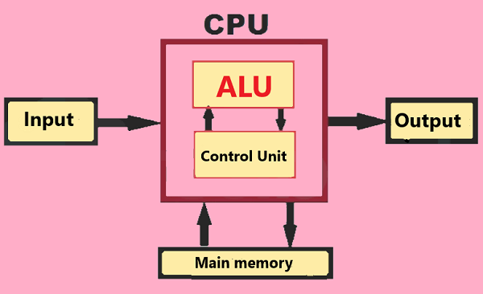
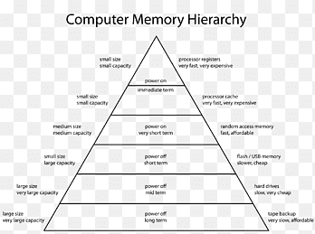

Componenti Principali

Vista d'insieme dei componenti principali di una CPU
1. Unità Aritmetico-Logica (ALU)
L'ALU è responsabile per l'esecuzione di operazioni aritmetiche e logiche:
- Operazioni aritmetiche: addizione, sottrazione, moltiplicazione, divisione
- Operazioni logiche: AND, OR, NOT, XOR
- Operazioni di confronto: maggiore di, minore di, uguale a
L'ALU lavora con dati binari e può eseguire operazioni su numeri interi e in virgola mobile.

Schema funzionale dell'Unità Aritmetico-Logica
2. Unità di Controllo (CU)
La CU coordina e controlla le operazioni all'interno della CPU:
- Decodifica le istruzioni dal programma
- Invia segnali di controllo agli altri componenti della CPU
- Gestisce il flusso di dati tra la CPU e la memoria
- Controlla la sequenza di esecuzione delle istruzioni
3. Registri
I registri sono piccole unità di memoria ad alta velocità all'interno della CPU:
- Accumulatore: Memorizza risultati temporanei delle operazioni
- Program Counter (PC): Contiene l'indirizzo della prossima istruzione da eseguire
- Registri di uso generale: Per memorizzare dati temporanei durante l'elaborazione
4. Cache
La cache è una memoria ad alta velocità che riduce il tempo di accesso ai dati frequentemente utilizzati:
- Cache L1: Più vicina al core della CPU, più veloce ma di dimensioni limitate
- Cache L2: Più grande della L1, ma leggermente più lenta
- Cache L3: Presente in molte CPU moderne, condivisa tra più core
La cache utilizza algoritmi sofisticati per prevedere quali dati saranno necessari e prelevarli in anticipo dalla memoria principale.

Gerarchia della memoria cache in una CPU moderna